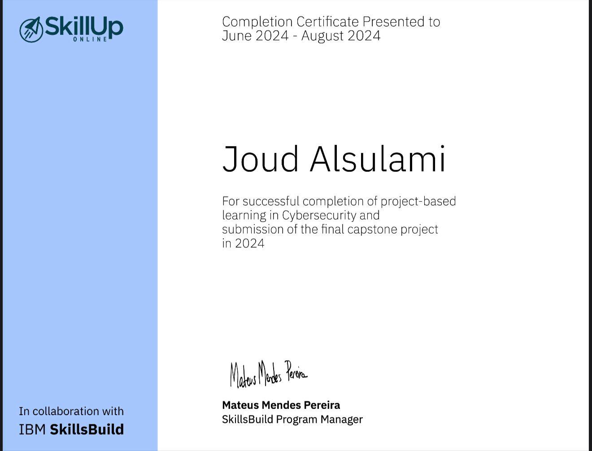
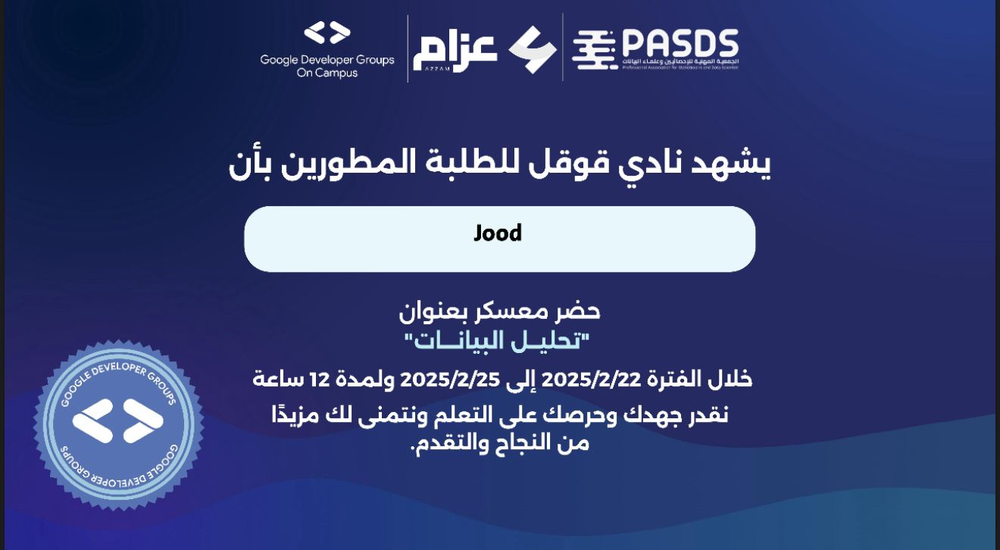
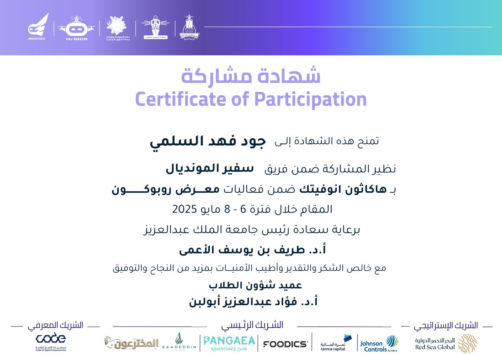
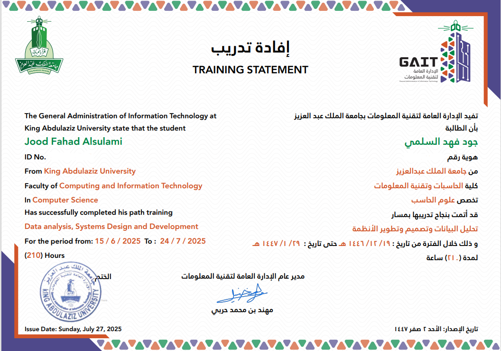

Certifications

Certified Cybersecurity Fundamentals Certificate
IBM SkillsBuild | June 2024 – August 2024

Certified AI League Hackathon Certificate
SCAI & Tuwaiq Academy | February 2025 – May 2025

Certified Data Analysis Bootcamp Certificate
PASDS & Google Developer Groups on campus | February 2025

Certified Robocon Hackathon - Tourism Track Certificate
Robocon Hackathon | June 2025

Certified Summer Internship Certificat
General Administration of Information Technology – King Abdulaziz University | Jun 2025 – August 2025